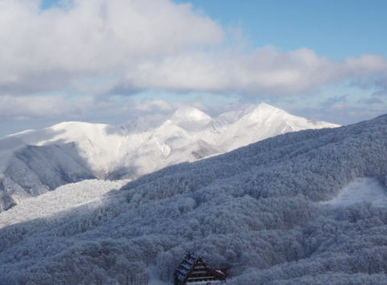

|
|||||||||||||||||||||||||||
|
|||||||||||||||||||||||||||
|
蔵 王 ス キ ー (山形山岳会蔵王山小屋合宿） |
| 開 催 日 | ２０10年1月2４〜30日（６泊７日） | |||
| リーダー | 木村喜代志 SL．阿部興二 M．徳永泰朗 |
|||
| HP制作者 | 徳永泰朗 (写真協力：小松崎幸代子） | |||
| 参加者数 | 22名 （会員19名、ゲスト３名） | |||
| 鬼が笑う話で恐縮です。鶴岡の木村です。来年の蔵王スキー行の件でメールします。現在、山形山岳会に1/24(Sun.)'10〜1/30(Sat.)'10の山小屋使用を仮申込み中で、OKの返事を得ています。10名前後で申込んでいますが、20名くらいまでなら宿泊可能です。宿泊料は1泊１名につき2000円です。寝具、暖房完備です。つきましては、①期日は、上記のとおり決定でよろしいでしょうか? ②全体の参加者取りまとめは、徳永さんにお願いします ③山小屋借用の件は木村が担当します |
| 上の小文は昨年５月に木村リーダーから報告者に送信いただいたメールです。早すぎるほどに早い企画のスタートでしたが以来８ヶ月、じっくりと企画を練り、仕度を進めていただいた L 、SL の苦心のスキー行の幕が上がります。 |
| １日目 １月２４日（日） |
| 入 山 日 |
| 13：00 蔵王中央ロープウェイ前駐車場に初日宿泊のメンバー１３人と食料搬入のお手伝いをして下さる地元のＫさんが集合し、15：00ごろまでをかけて１週間分の食料を山小屋へ搬入した。 以下、自炊合宿のコンセプトに従い、毎日、毎食の主メニューを掲載します。 献立 夕食： 牛丼＝牛肉・白滝・タマネギ・すりおろし生姜 |
|  |
| 陽光に雁戸山（がんどさん）が照り映える 山小屋は写真下部の三五郎ヒュッテの側に佇む |
| 蔵王連峰と蔵王スキー場 蔵王連峰は火山活動時代や地質構造などによって、北蔵王、中央蔵王、南蔵王、西蔵王などのブロックに分けられるが、大まかには蔵王エコーラインを境に杉ヶ峰、屏風岳、不忘山など通称南蔵王と、熊野岳、地蔵山、三宝荒神岳、鳥兜山などの蔵王に二分される。双方の交通の便やスキー場開発などにおいて好対照をなし、単に「蔵王」といった場合は、後方を指すのが普通である。今回のスキー、スキーツアーの舞台もこの地域である。 蔵王は火口湖の「お釜」と、中央火口丘の五色岳を取り巻いて最高峰の熊野岳（１８４１ｍ）、刈田岳（かっただけ）、馬の背、名号峰を外輪山とする比較的新しい山群と、蔵王温泉（高湯爆裂火口）を取り巻く鳥兜山、横倉山、瀧山などの古い火山群が中心となっている。蔵王温泉スキー場は、活動時期の異なる火山地形を利用してコース、ゲレンデが切り開かれている。 （k .kim ) |
| 棟が前にせり出して貫録十分な山小屋だ |
| A | ||
| Ｌ．ＳＬ．が買出ししてくれた食料を運ぶ | ザックの出し入れは簡単だったが 買いそろえる方は大変だったことと思う |
| A | ||
| 木村リーダー兼シェフには手が出せない | それを良いことに呑兵衛どもは早くも始める |
| ２日目 １月２５日（月） |
| ゲレンデ滑降 |
| 献立 朝食：人参と糸コンニャクの鱈子和え＝ニンジン・糸コンニャク・鱈子 昼食：カレーライス 夕食：おでん＝ダイコン・コンニャク・練物・ロールキャベツ・鶉の卵・昆布・牛筋・ハンペン・筍など |
| A | ||
| 料理はともかく、配膳と 食器洗いのために 当番制を敷いた |
第２日目には青空が拡がり、 陽光に霧氷が映えた時間もあったが・・・ |
| A | ||
| 午後には関西から遠来のＫさんも到着 | 地元から、津軽から、東京から |
| A | ||
| 人数が多くなったので２班に分かれて行動した 記念撮影の時間とカメラは違っても一緒の場所だった | ||
| ３日目 １月２６日（火） |
| ゲレンデ滑降 |
| 献立 朝食：ナメコの大根おろし添え＝ナメコ・大根 刻み昆布と油揚げの煮しめ＝刻み昆布・油揚げ 昼食：カレーライス 夕食：酢豚＝タマネギ・ニンジン・豚肉・ソース 手羽の甘辛炒め＝手羽元・ソース |
| A | ||
| 広いゲレンデはほとんど貸し切りだ | 蔵王中央ロープウェイ鳥兜駅(中央ゲレンデ最上部) からの三宝荒神山(1703m) 三宝荒神とは、火の神、かまどの神である |
| A | ||
| 雪国津軽のＴさんはいつも ラストを滑って見守ってくれていた |
早くも下山する御一行もある 手を握り津軽三人衆と別れを惜しむ |
| A | ||
| 山小屋の高い天井には常時ファンが回り、 小屋の空気を撹拌する |
明日は晴れそうだ、と弁慶飯を焼くリーダー 弁慶飯−おにぎりに味噌をつけ、 青菜漬けの葉の部分で包んで焼く |
| ４日目 １月２７日（水） |
| ゲレンデ滑降 |
| 献立 朝食：白菜と豚肉のうま煮＝白菜・豚肉・シイタケ・人参・ピーマン・ウズラの卵・ソース 昼食：カレーライス 夜食：キリタンポ鍋＝キリタンポ・鶏肉・ゴボウ・マイタケ・セリ・スープ・鶏骨&鶏皮 鶏肉とネギのバジルソース和え＝鶏肉(もも)・ネギ・バジルソース 焼芋 |
| A | ||
| 昨夜の期待もむなしくなかなか天候は 安定してくれない ツアーは中止になった |
１月中旬の時ならぬ雨に打たれて 蔵王自慢のモンスターも未完成のままだ |
 |
| ツアーに出かける見通しだった前夜にザックに装着していたＧＰＳでトラックが採れた ゲレンデではあるが滑りまわった軌跡を掲載する。 お世話になった山形山岳会の小屋は地図右上部の三郎岳から上にＳ字状に伸びた軌跡の末にある |
| ５日目 １月２８日（木） |
| 午前：ゲレンデ滑降 午後：降雨停滞 |
| 献立 朝食：キャベツ、ソーセジとリンゴの白ワイン煮＝キャベツ・ソーセージ・リンゴ・ワイン・コンソメスーフ 昼食：カボチャ煮 カレーライス 夕食：筑前煮＝筑前煮材料・鶏肉 豚肉とジャガイモの炒め物＝豚肉・ジャガイモ・赤ピーマン・ネギ 豚肉のトマト煮＝豚肉・玉ねぎ・シメジ・ピーマン・牛蒡・ジャガイモ・ソース・モツァレラチーズ |
| A | ||
| 木村リーダー、この人の背中はいつも何かを語る | 夜来の雨に打たれて美しかった霧氷が落ち、 箒を逆さにしたような無残な光景が・・・ |
| A | ||
| 地蔵頂上駅は雪だったものの 標高が下がったゲレンデには降雨が来た |
小屋に戻り、夜行バスの疲れでＦさんは 苦しい姿勢のままうたたねでした |
| A | ||
| 台所ではＬ．ＳＬ．が腕を奮いだす | 素早い手際でしゃきしゃき感の ポテト炒めが出来上がった |
| A |  |
|
| 山形山岳会の幹事長さんからは 奥様手料理の「大根唐辛子煮」の差し入れも |
そうして今夜も宴がスタートします 越後からは風雪を超えてＨさんもご到着 |
| ６日目 １月２９日（金） |
| ゲレンデ滑降 |
| 献立 朝食：茸納豆＝納豆・シイタケ・シメジ・エノキ 昼食： ホイコーロ＝キャベツ・豚肉・ピーマン・ソース 夕食：クリームシチュー＝キャベツ・タマネギ・ニンジン・ジャガイモ・鶏肉(もも)・エリンギ・ブロッコリー・ホワイトソ-ス ゼンマイの煮しめ＝ゼンマイ・つきコンニャク・干し椎茸 |
| A | ||
| いよいよあと１泊というところに来て 思いがけず青森のＴさん（左）が顔を出してくれた 右は山形山岳会のA幹事長さん |
小屋備え付けの白米を消費したので ３人が１０ｋｇずつ３０ｋｇを運びあげた |
| A | ||
| 昨日の雨の後、樹木には再び薄っすらと霧氷が付きはじめた その下、新雪を滑る（中森ゲレンデ上部にて） |
||
| 空にしても、空にしても、次の酒が上がってくる |
| ７日目 １月３０日（土） |
| 下 山 日 |
| 献立 朝食：スペインオムレツ＝鶏卵・ベーコン・ジャガイモ（男爵）・玉ネギ・人参・ニンニク |
| これは写真があればよかったのですが、最終日残りもの食材をかき集めたとはとても思えない、直径およそ３０ｃｍ、見事な出来栄えのホワホワのオムレツでした。食欲が刺激されてカメラを出すことを忘れてしまったのが無念です。 代わりに木村シェフのレシピを加えます。①ジャガイモと人参を千切り、玉ネギをスライス、ニンニクを微塵切りにする。②①にとき卵を加え、さらに砂糖・塩・胡椒を入れてよくかきまぜる。③温まったフライパンにやや多めの油を入れ、②の材料を一気に流しいれる。④フライパンの具材の形を整え、蓋をしてとろ火で焼く。⑤フライパン中央部に火が通り始めたら、蓋に具材をひっくり返す。⑥ひっくり返した具材をそっとフライパンに（焼けた面を上にして）滑りこませて、蓋をしてさらに焼く。⑦ころ合いを見て、蓋を大皿に変え、フライパンを逆さにして取り出す。トマトケチャップなどをかけて食べる。大きいので落書きなどをすればさらに楽し。 |
| A | ||
| いよいよ最終日、滑る仲間も５人に減った | 気のせいか、なんだか寂しげな・・・ |
| 来シーズンに向けて このホームページを見てもわかるとおり、今回は木村リーダーに全食事の賄いをお受けいただきました。いかに料理に自信をお持ちで自らお受けいただいたといえどもご負担を思うと行きすぎだったと反省します。またメンバーの中には腕を振いたいとムズムズしているとの声も少なくなかったように思います。来シーズンに実施する場合は参加メンバーで数人ずつグループを組んでもらって分担し、各々ご当地料理や得意料理を披露しあう楽しみが加われば、この合宿の意義がさらに高まるのではないかと思いました。 |